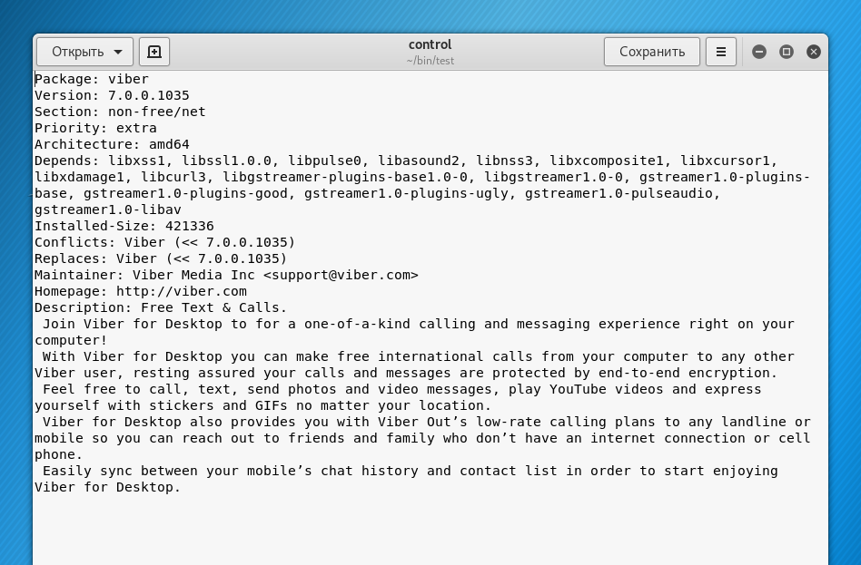
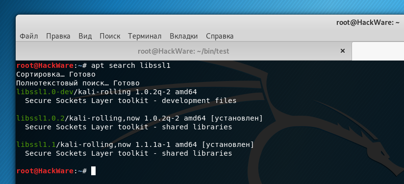
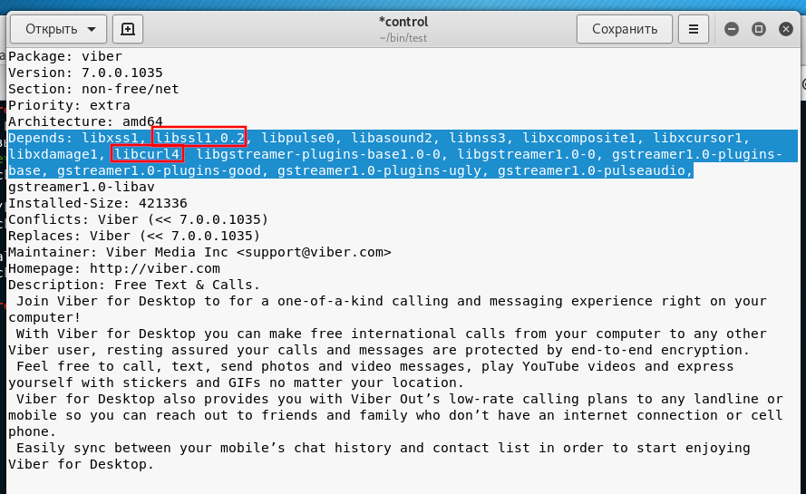
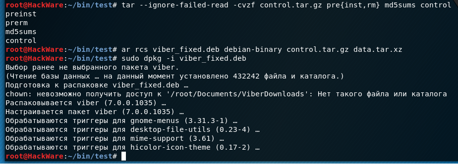

Бывает что нужно установить пакет .deb для которого в стандартных репозиториях отсутствует нужная версия зависимости. Например, в зависимостях прописан пакет libcurl3, а в системе доступен только libcurl4; или в зависимостях libssl1.0.0, а в системе имеется только libssl1.0.2.
Сам по себе такой пакет .deb обычно берётся не из стандартного репозитория, поэтому надеяться, что проблема будет исправлена в будущем, особо не приходится.
При этом высока вероятность, что интересующий нас .deb пакет будет нормально работать и с libcurl4 вместо libcurl3 (может даже лучше будет работать) и с libssl1.0.2 вместо libssl1.0.0 — и так далее по аналогии, у вас могут быть свои собственные зависимости, которые вызывают проблемы.
Сразу оговорюсь, не стоит делать то, что здесь показано, с драйверами, особенно с драйверами видеокарты — слишком велика вероятность получить систему, которая загружается в чёрный экран. А с какими-нибудь прикладными программами это вполне можно попробовать — в конце-концов, если не заработает, то не заработает — просто удалим её, хуже уже не будет.
Я покажу, как подправить список зависимостей в пакете .deb на примере Viber, заодно мы немного познакомимся со структурой пакета .deb. Не то чтобы Viber это мой любимый мессенджер для общения — просто его установка прям классический пример того, о чём я говорил в самом начале: жёстко прописанные зависимости определённых версий, но программа прекрасно работает и с более новыми версиями.
Для установки пакета его нужно скачать с официального сайта:
|
wget https://download.cdn.viber.com/cdn/desktop/Linux/viber.deb |
Пакет можно установить с помощью команды dpkg и ключей --ignore-depends:
|
sudo dpkg --ignore-depends libcurl3 --ignore-depends libssl1.0.0 -i viber.deb |
но это приведёт к тому, что поломается apt. Будут показываться сообщения о неудовлетворённых зависимостях:
|
2 3 4 5 6 7 |
Чтение списков пакетов… Готово Построение дерева зависимостей Чтение информации о состоянии… Готово Возможно, для исправления этих ошибок вы захотите воспользоваться «apt --fix-broken install». Следующие пакеты имеют неудовлетворённые зависимости: viber : Зависит: libssl1.0.0 но он не может быть установлен viber : Зависит: libcurl3 но он не может быть установлен E: Неудовлетворённые зависимости. Попытайтесь выполнить «apt --fix-broken install», не указывая имени пакета (или указав решение). |
И уже не обновить систему, не установить новые пакеты пока не удалите программу, вызывающую эти проблемы:
|
sudo apt remove viber |
Поэтому лучше пойти другим путём.
По большому счёту, файл .deb — это архив, в который собраны файлы программы (исполняемые файлы, файлы настроек, конфигурационные файлы — всё то, что нужно для запуска и работы программы), а также служебные файлы, в которых содержится описание пакета, требуемые зависимости и прочая метаинформация.
Распаковываем скаченный пакет deb:
|
ar x viber.deb |
Для распаковки используем утилиту ar, которая предназначена для создания, модификации и извлечения из архивов.
В результате будут извлечены следующие файлы:
Вообще, поскольку data.tar.xz содержит саму программу, то может возникнуть идея просто раскидать файлы в системе по нужным путям — это тоже будет работать, но мы сделаем чуть более сложно, но и более правильно.
Распаковываем контрольный архив:
|
tar xzf control.tar.gz |
Открываем текстовым редактором файл control:
|
gedit control |

Найдём там строку, начинающуюся с Depends:
|
Depends: libxss1, libssl1.0.0, libpulse0, libasound2, libnss3, libxcomposite1, libxcursor1, libxdamage1, libcurl3, libgstreamer-plugins-base1.0-0, libgstreamer1.0-0, gstreamer1.0-plugins-base, gstreamer1.0-plugins-good, gstreamer1.0-plugins-ugly, gstreamer1.0-pulseaudio, gstreamer1.0-libav |
То есть, это и есть список зависимостей.
Скорее всего, свой установочный файл .deb вы уже пробовали установить и уже и так знаете, каких зависимостей не хватает.
Можно сделать проверку следующим образом — берём список, который идёт после Depends:, удаляем запятые, чтобы не нарушить синтаксис apt, и пытаемся установить все эти зависимости просто дописав этот список после sudo apt install, получается следующая команда:
|
sudo apt install libxss1 libssl1.0.0 libpulse0 libasound2 libnss3 libxcomposite1 libxcursor1 libxdamage1 libcurl3 libgstreamer-plugins-base1.0-0 libgstreamer1.0-0 gstreamer1.0-plugins-base gstreamer1.0-plugins-good gstreamer1.0-plugins-ugly gstreamer1.0-pulseaudio gstreamer1.0-libav libssl1.0-dev |
Результат:
|
2 3 4 5 6 7 8 9 10 11 12 13 14 15 |
Чтение списков пакетов… Готово Построение дерева зависимостей Чтение информации о состоянии… Готово Пакет libcurl3 недоступен, но упомянут в списке зависимостей другого пакета. Это может означать, что пакет отсутствует, устарел или доступен из источников, не упомянутых в sources.list Однако следующие пакеты могут его заменить: libcurl4
Пакет libssl1.0.0 недоступен, но упомянут в списке зависимостей другого пакета. Это может означать, что пакет отсутствует, устарел или доступен из источников, не упомянутых в sources.list
E: Для пакета «libssl1.0.0» не найден кандидат на установку E: Для пакета «libcurl3» не найден кандидат на установку |
Итак, требуется libcurl3, но в системе есть только libcurl4. Я просто меняю в файле control запись libcurl3 на libcurl4.
Ещё один отсутствующий пакет libssl1.0.0. Поскольку указана конкретная версия, можно предположить, что версия в репозитории была обновлена и по этой причине невозможно найти то, что нужно.
Ищем по более короткому описанию версии, то есть, например вместо libssl1.0.0 я ищу libssl1:
|
apt search libssl1 |

Как можно увидеть, найдено целых два варианта: libssl1.0.2 и libssl1.1. На мой взгляд, libssl1.0.2 ближе к libssl1.0.0, поэтому я в файле control меняю запись libssl1.0.0 на libssl1.0.2.

Сохраняем и закрываем файл control.
Теперь собираем установочный файл — делаем это в обратном разбору порядке.
Я уже пробовал, поэтому я знаю, что команда пожалуется на отсутствие файла postrm, поэтому просто создаём пустой файл postrm командой:
|
touch postrm |
Упаковываем всё наше «добро» в control.tar.gz:
|
tar --ignore-failed-read -cvzf control.tar.gz pre{inst,rm} post{inst,rm} md5sums control |
Разберём последнюю команду чуть подробнее. Строки pre{inst,rm} post{inst,rm} раскрываются в следующие:
|
2 |
echo pre{inst,rm} post{inst,rm} preinst prerm postinst postrm |
То есть, фактически в создаваемый архив добавляются файлы postinst, postrm, preinst, prerm. Эти файлы представляют собой скрипты, выполняемые на различных этапах установки/удаления:
Они являются необязательными — то есть могут отсутствовать. Если команда tar написала, что отсутствует какой-либо файл (например, файл postrm), то отредактируйте эту команду — уберите из списка отсутствующий файл, например, вместо создания postrm можно было записать команду следующим образом:
|
tar --ignore-failed-read -cvzf control.tar.gz pre{inst,rm} postinst md5sums control |
Продолжаем. Вновь собираем deb:
|
ar rcs viber_fixed.deb debian-binary control.tar.gz data.tar.xz |
Устанавливаем наш пофиксенный пакет:
|
sudo dpkg -i viber_fixed.deb |
Ошибка «в значении поля «Description» обнаружена пустая строка»
Если при установки пакета возникла ошибка:
|
2 3 4 5 |
dpkg: ошибка при обработке архива viber_fixed.deb (--install): анализ файла «/var/lib/dpkg/tmp.ci/control» около строки 17 пакета «viber»: в значении поля «Description» обнаружена пустая строка При обработке следующих пакетов произошли ошибки: viber_fixed.deb |
То это означает, что в файле control есть последняя пустая строка — удалите эту пустую строку и пересоберите установочный файл.
После этого всё ставится как нужно:

�